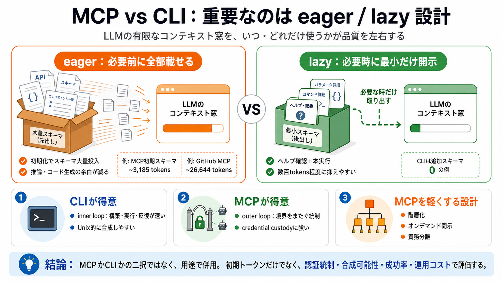

Your coding agent spends 26,000 tokens before it reads your prompt: Comparing MCP and CLI — Blocks.ai Blog
Initial source page

「MCPかCLIか」より重要なのは、設計がeagerかlazyかで、LLMのコンテキスト（トークン）消費が決まる点です。
LLMには有限なコンテキスト窓があり、ツール説明やスキーマにトークンを使うほど、推論とコード生成の余裕が減ります。
MCPはツールの入出力スキーマを提示し、CLIはコマンド体系に従って呼びます。
eager（先出し）は必要前に情報を載せ、lazy（後出し）は要求に応じて必要最小だけ開示します。
Blocks.aiはClaude Sonnetの count_tokens で、CLI/MCP/Skill file/サードパーティMCPの「初期時の増分」を比較しました。
Blocksの例では、Blocks MCPサーバの初期時スキーマトークンが約3,185。一方Blocks CLIはスキーマ追加が0でした。
GitHub MCPの例では、ツールセットを有効化すると初期時に約26,644 tokensを消費するケースが示されました。
「MCPは高コスト」というより、数値の大部分は不適切なサーバ設計（eager設計）が生む可能性が高い、と記事は譲歩します。
CLIは「ヘルプ確認＋本実行」で数百トークン程度に収まりやすい、という方向性が示されます。モデルが既に理解しているコマンド体系とも整合します。
MCPはcredential custody（認証情報の管理）で有利になりやすい一方、合成（composability）では弱くなり得る、と記事は整理します。
CLIは開発者の内側のループに向き、MCPはエージェント間で境界をまたいで統制する外側のループで有用になりやすい、と述べられます。
MCPでもコストを抑えるには、ツールを階層化し、詳細をオンデマンドで要求するなど、lazyな開示設計を取るのが有効です。
固定の二択にせず、用途で分けて併用するのが合理的です（例：構築・公開はCLI、他者のエージェント呼びはMCP）。
「トークンが少ない＝常に正解」ではありません。認証統制、合成可能性、ツールカバレッジ、運用コストまで含めて選びましょう。
Initial source page
Composio found about 50% less context consumption for multi-app queries using their CLI. And someone built mcp2cli (2.2K…
Round 3, 508 tools across 16 servers: input tokens fell from 75.1M to 5.4M (−92.8%), estimated cost from $377.00 to $29.…
Benchmarks show MCP costing 4x to 35x more tokens than CLI for equivalent single-step operations. The variance depends o…
All three rounds kept a 100% pass rate in both configurations, which means none of the savings came from sacrificed accu…
A single tool call might cost ~900–3,000 tokens total versus 15,000+ for the equivalent MCP call. ## Real-World Benchma…